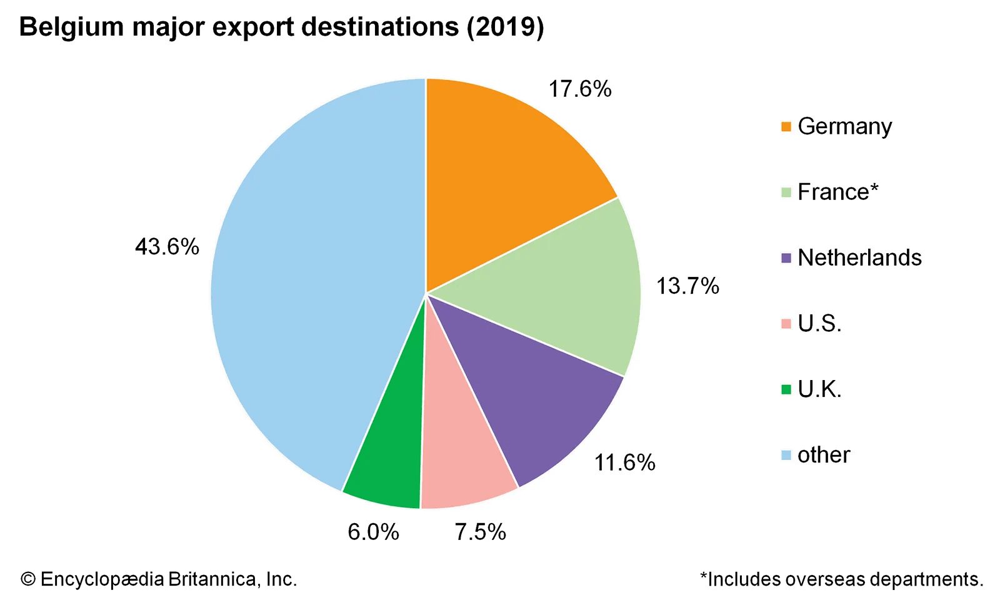

Belgium is a strong example of a country filled with highly skilled professionals, many with experience working in multinationals, and a significant portion who are also accustomed to remote work in the aftermath of the pandemic.
This small European nation contains a mobile labor market, backed by one of Europe’s strongest economies.
All Belgian employees are covered under the mandatory social security system funded by payroll contributions by both employers and employees. The Belgian minimum wage is currently fixed at €1,625.72 ($1848.09) per month or €19,508.64 ($22,177) per year.
Overtime work is closely regulated in Belgium and until recently, there was a strict cap on how much overtime work employees could do. Under Belgian law, overtime work is classified into: 1. Regular overtime — where an employer requires an employee to put in extra hours, and 2. Voluntary overtime
As per OECD data, 64% of the Belgian population is currently employed and the Benelux nation consistently enjoys a high ranking from research into the world’s happiest workforces.
1. Surgeons/Doctors
Salary Range: from 11,500 EUR to 32,900 EUR
Surgeons top the list of the highest paying careers due to the critical nature of their job. A surgeon's profession involves high risk and requires extensive knowledge and a long learning path; the necessary ingredients for a high paying career.
2. Judges
Salary Range: from 9,710 EUR to 27,700 EUR
Judges earn quite high salaries because of the huge responsibilities associated with their job. Deciding people's fates is not an easy task and the high wage is perfectly justified.
3. Lawyers
Salary Range: from 7,950 EUR to 22,500 EUR
The main reason that lawyers earn big wages is because of their high perceived value in the eyes of their clients. A successful lawyer can save/earn you tons of money or can possibly spare you a death sentence.
4. Bank Managers
Salary Range: from 7,500 EUR to 21,200 EUR
Being in charge of hundreds of millions in funds and investments with all the associated risks that come along makes managing a bank an extremely critical task worthy of a large salary.
According to DESI 2022, Belgium ranks 6th among EU countries on the integration of digital technology. The use of advanced digital technologies remains one of the country’s strengths.
Belgian companies, including SMEs, are taking advantage of e-commerce opportunities: 30% of SMEs sell online (well above the EU average of 18%), 15% of them are selling cross-border, and 15% of their turnover comes from the online segment. 45% of Belgian enterprises use social media, up from 34% in 2019, while 57% use electronic information sharing.
Belgium is the seventh smartest country in the world according to a list provided by The Spectator Index.
Metallurgy, steel, textiles, chemicals, glass, paper, and food processing are the dominant industries. Belgium is one of the world's leading processors of cobalt, radium, copper, zinc, and lead. Refineries, located principally in the Antwerp area, process crude petroleum.
